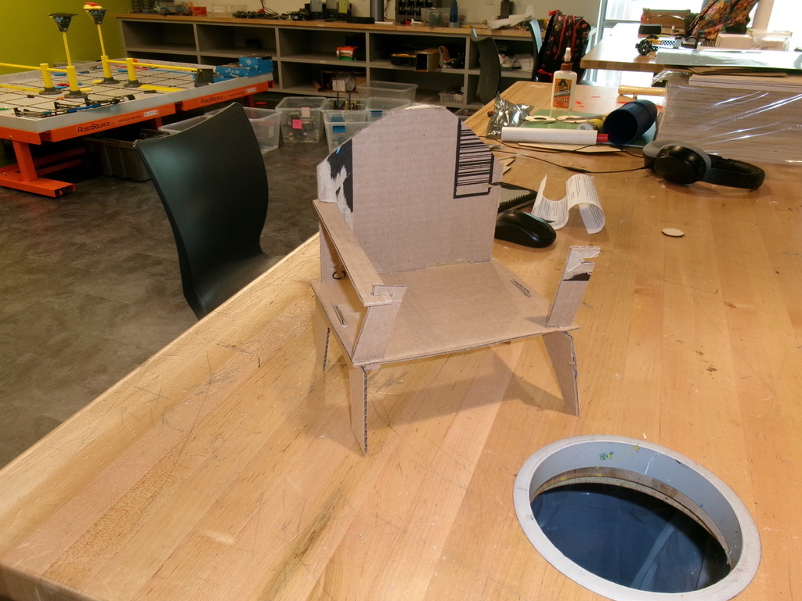
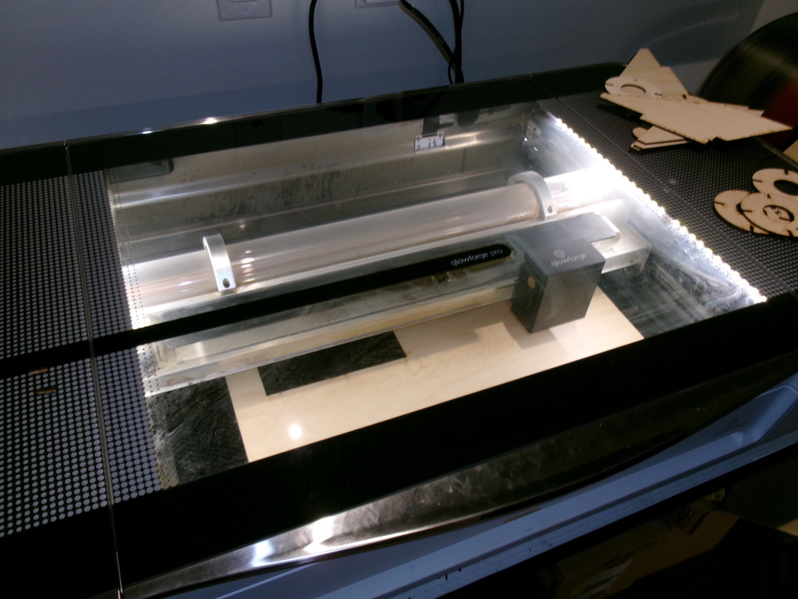
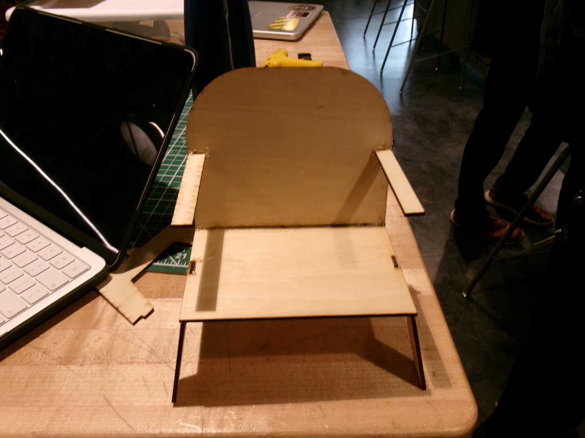

Laser Cutting Project
Research / Prototyping / Final Build
Project overview
This project explores the use of laser cutting to create precise tolerances and designs. My process began with an initial cardboard prototype that I used as the base
for my design. Then I used CAD to model the final design and laser cut it out of wood. The final result is a small chair for a teddy bear named Milo. The project was
successful and I learned a lot about laser cutting and tolerancing.
Stage 1
Concept and prototype
The goal was to make a chair that would fit the small size of the teddy bear. Constraints included the size of the laser cutter and the thickness of the wood.
I started by making a cardboard prototype to test the dimensions and proportion of the chair. This helped me visualize the final product and helped me CAD the dimensions.

Stage 2
Design and modeling
Using the cardboard prototype as a reference, I created a model of the chair in Fusion.
This allowed me to refine the dimensions and ensure that all parts would fit together correctly when cut.

Stage 3
Cutting and Iteration
The laser cutting process went quickly, and I was able to cut the pieces out quickly. I had to make some adjustments in the arm piece because the initial tolerance was too loose.
I also had to make some adjustments to the leg piece, because the trapezoidal slit in which it fit into the seat was too tight. I narrowed the slit and it fit perfectly.

Stage 4
Final Cuts and Gluing
After the final cuts were made, I glued everything together and the chair was complete. I used hot glue to intially hold everything together, then I added additional support with wood glue.

What I learned
This project taught me a lot about DFM (design for manufacturing) and tolerancing. Small adjustments to the CAD model made a big difference in how
the final product fit together. The thickness of the laser and the speed and intensity at which you cut matters when making your design, and I improved
my skills in iteration and problem solving.
← Back to projects